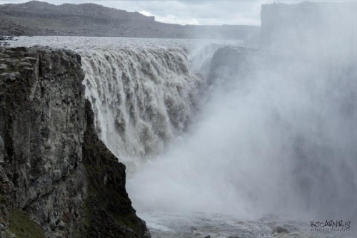

Gullfoss
Gullfoss er einn þekktasti foss Íslands og er staðsettur í Hvítá á Suðurlandi.
Lesa meira →Ísland er þekkt fyrir að hafa fallega fossa og einstaka náttúru. Ég ætla að fjalla um þrjá þekkta fossa á Íslandi sem eru Gullfoss, Dettifoss og Barnafoss. Þessir fossar eru ólíkir hver öðrum og hafa allir sitt sérstaka útlit og einkenni. Á síðunni má lesa meira um hvern foss og sjá myndir af þeim.
Gullfoss er einn þekktasti foss Íslands og er staðsettur í Hvítá á Suðurlandi.
Lesa meira →
Barnafoss er fallegur og kraftamikill foss í Borgarfirði á Vesturlandi.
Lesa meira →
Dettifoss er einn öflugasti foss Íslands og er staðsettur á Norðausturlandi.
Lesa meira →